漫画版
第十二話「二度目の訂正」
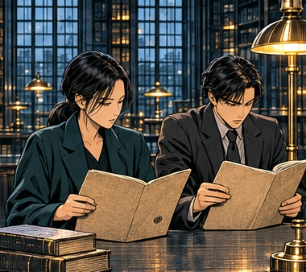
資料室・二件の訂正票
宝石店と床屋、どちらも当時の訂正票があります。
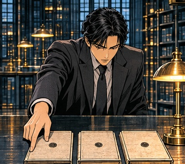
訂正のあとに配られた資料も見つかりました。
朝倉が訂正票と配布資料の束を横に並べた。
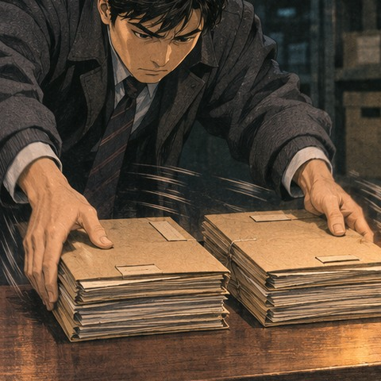
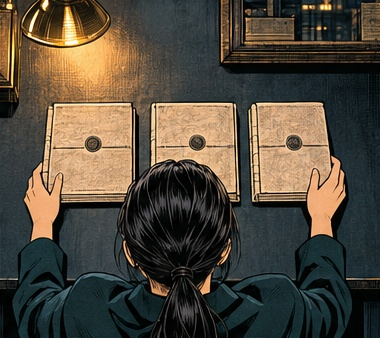
元の記録から訂正票へ。そのあと配布版でどう変わった？
| 事件 | 元の記録 | 訂正票 | 配布版 |
|---|---|---|---|
| 宝石店 | 2:17 | 2:10 | 2:03 |
| 床屋 | 8:20 | 3:40 | 8:20 |
1 / 4
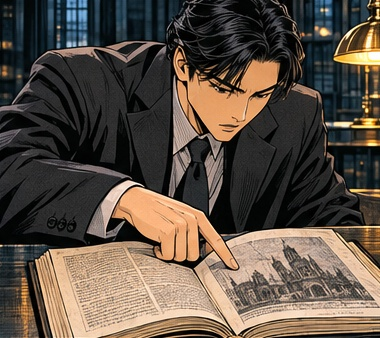
床屋は証言の時刻に戻ってます。宝石店は、さらに早まってる。
訂正票から配布版の間に、何をしたらこの時刻になる？
宝石店 2:17 → −7分 → 2:10 → −7分 → 2:03
床屋 8:20 → 左右反転 → 3:40 → 左右反転 → 8:20
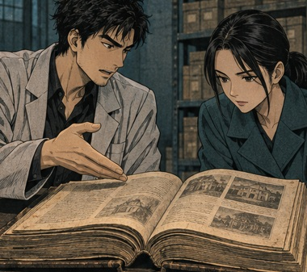
二件とも、訂正済みの時刻に同じ処理がもう一度かかってる。
2 / 4
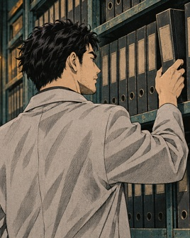
逆さのデジタル時計を読んだ事件もあったな。
これも配布版で逆さに戻ってます。同じ処理を二度した形です。
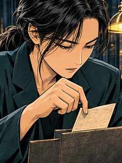
処理した人の欄は空白。でも裏に地下の棚番号がある。
表 処理者欄は空白
裏 地下資料室の棚番号
3 / 4
棚番号だけ控えて、箱を探すか。
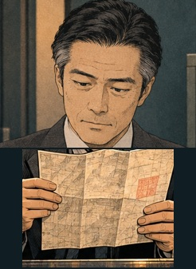
票も持っていこう。番号と受領印を、箱の元資料と照らせる。
水城たちは訂正票を持ち、地下へ続く階段を下りた。
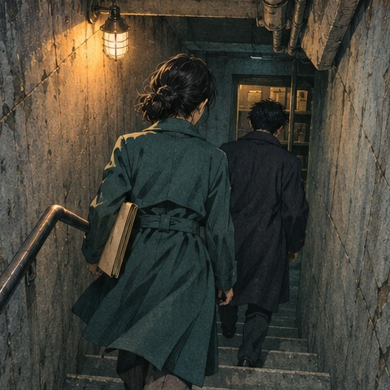
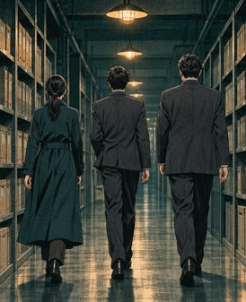
地下資料室へ
棚の箱と、この受領印つきの票を照合しましょう。
4 / 4